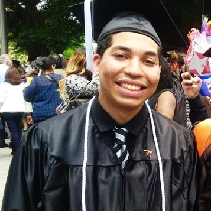

Alejandro Garcia
CS Major, University of San Francisco
Expected Graduation: 2020
argarcia6@dons.usfca.edu
I am currently a Undergraduate CS student in my last semester in Unversity of San Francisco. Some fun facts about myself is that I was born in Miami, Flordia and my hobbies are photography/film making and gaming. Come check out my linkedin, and Github Pages.
Skills